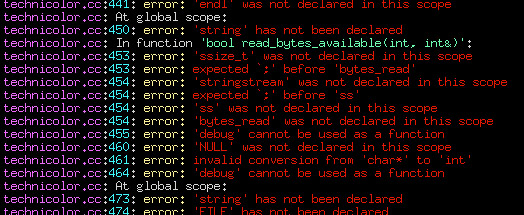

Psychodelicize Your Eyes
Purpose
Technicolor colors the output of UNIX commands, using a configuration driven by regular expressions. The idea is to make output easier to read. You have a nice color monitor, so why not use the pixels?
Download
- technicolor-1.0.tar.gz Released May 2nd, 2007
Screenshots
A picture is worth 1024 words!
- Exhibit 1: GCC output
- Exhibit 1: GCC output
- Exhibit 1: GCC output